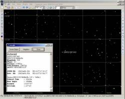

Version 3 alpha 0.0.4
This version add the support for an asteroid database.
 It is now possible to show all the know asteriods down to a fixed magnitude on any chart.
This is achieved by using a database system to store and quickly retrieve the related asteroid elements from the 200'000 MPCORB list.
{kind=link}
As there is still no documentation I give a brief explanation here.
The first step is to load the MPCORB file to the database, a simple selection can be done if you don't want the full file. As the orbite parameter change over the time it is possible to keep many version of this data. The program will always use the nearest from the observation date.
The file is available from :
ftp://cfa-ftp.harvard.edu/pub/MPCORB/
If you have difficulties to connect take a look at the middle of this page:
http://cfa-www.harvard.edu/iau/mpc.html
Then a computation of each asteroid magnitude is done for the first of each month. This allow to roughly eliminate the object too faint at a given date and speed up the daily computation.
This process is slow due to the volume of data to compute, I suggest you click this button just before going lunch.
This is all for the data preparation.
 When a new date is selected the position of all the asteroids brighter than the limit is computed for 0h UT. This take 5 seconds for a limiting magnitude of 18, but 15 seconds down to magnitude 20.
When a new date is selected the position of all the asteroids brighter than the limit is computed for 0h UT. This take 5 seconds for a limiting magnitude of 18, but 15 seconds down to magnitude 20.
This position is used to choice the asteroid to display to the chart, for this one the precise position at the time of the observation is computed in a fraction of a second.
You can use the search box to locate any asteroid in the database, enter the asteroid number or a part of the asteroid name.
This asteroid is temporarily added to the daily list even if is current magnitude is fainter than the limit. This is an easy way to add a few faint target to the chart.
To use this new function it is necessary to install a MySQL version 4 database server.
A simplified package to install the database is available for the Windows user that don't already own one.
On Linux I suggest you use the version provided by your distribution, or if not at version 4.0 get it from www.mysql.com. More precisely this is the MySql client library that must be at version 4.0, the server itself can be another version.
When the program is started for the first time it will request the connexion parameters for the database. I sugest you create a new database using the corresponding button, this also load a sample file with 1000 asteroids.
If you don't want to use this feature juste click Cancel on this screen to disable the asteroid display.
Computing all this data may cause some problem if your processor is not powerful enough. In this case use less data by limiting the number of object you load from the file.
I also remark that on the same computer, the computing speed is two or three time slower using Windows 98 than using Windows 2000 or Linux.